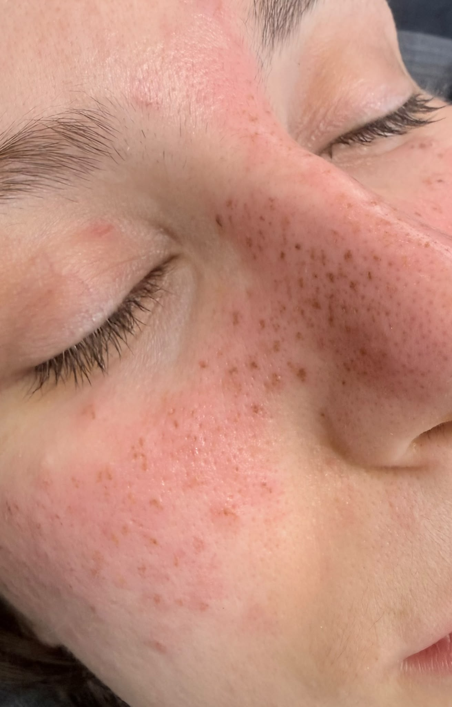

Signature Freckles · Granollers
Micropigmentación de pecas en Granollers
Pecas diseñadas una a una para que no parezcan tatuadas. Creamos freckles semipermanentes con una distribución irregular y personalizada según tu piel, tus rasgos y el efecto que buscas.
- Distribución irregular
- Diferentes tamaños
- Tono personalizado
- Diseño previo contigo

Pecas, freckles o freckle tattoo
Un resultado diseñado contigo.
La micropigmentación de pecas, también buscada como freckles, tatuaje de pecas o freckle tattoo, deposita pigmento de forma superficial para imitar pequeñas variaciones naturales de color. El resultado inicial se ve más intenso y después evoluciona durante la curación.
No trabajamos con una plantilla idéntica para todas. Observamos tus rasgos y el comportamiento de la piel, marcamos una propuesta y la revisamos contigo antes del procedimiento.
Cómo hacemos tus freckles
Pecas en Granollers, cerca de Barcelona.
Realizamos el tratamiento con cita previa en Avinguda Sant Esteve, 40, 08402 Granollers. Atendemos a personas de Granollers, el Vallès Oriental y Barcelona.
Antes de la cita evita llegar con la piel irritada o quemada por el sol e informa de alergias, medicación, afecciones cutáneas, embarazo, lactancia o tratamientos recientes.
¿Cómo las imaginas?
Envíanos una referencia e indícanos si buscas pocas pecas, una densidad media o un efecto más visible. Te orientaremos antes de reservar.
Consultar mi diseñoPreguntas frecuentes sobre pecas
¿Cuánto duran las pecas semipermanentes?
El tono se desvanece progresivamente. La duración varía según la piel, el sol, los cuidados, el metabolismo y otros factores.
¿Puedo elegir cuántas pecas quiero?
Sí. Acordamos un efecto ligero, medio o más visible y adaptamos distribución, tamaño, densidad y tono a tus facciones.
¿Dónde realizáis las freckles?
En Nohuska Beauty Lab, Avinguda Sant Esteve, 40, 08402 Granollers, con cita previa.
¿La valoración es gratuita?
Sí. Revisamos la piel, el efecto que buscas y si el tratamiento es adecuado antes de reservar la sesión.
Evolución real
Antes, recién hechas y curadas.
Una fotografía del primer día no cuenta toda la historia. El tono recién realizado es más visible y después cambia durante la curación. Iremos incorporando casos propios y autorizados en tres momentos para que puedas valorar el punto de partida, la intensidad inicial y el resultado asentado.
Las imágenes se publicarán sin filtros que alteren el color y cada caso indicará en qué momento de la evolución fue fotografiado.
Guías de pecas
Pecas que parezcan tuyas.
Diseño individual y valoración gratuita en Granollers.
Quiero diseñar mis pecas